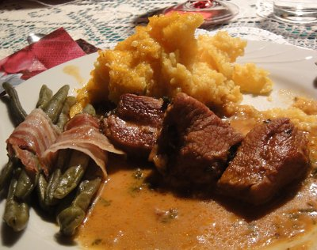

| Zutaten für 4 Personen: | |
| 800g | Kalbsvoressen |
| 2 El | Öl |
| 7-9 | grosse Salbeiblätter |
| 1 | Zwiebel |
| 1 | Knoblauchzehe |
| 1 Tl | Tomatenpüree |
| 1 dl | weisser Vermouth, herb |
| 1 dl | Bouillon |
| Pfeffer aus der Mühle | |
| 1/2 Tl | Salz |
| 1 dl | Rahm |
| 1/2 Bund | Petersilie |
Das Kalbsvoressen in 3cm grosse Würfel schneiden.
Zwiebel hacken, Knoblauch schälen.
Das Öl im Brattopf erhitzen.
4-6 Salbeiblätter im Öl braten, herausnehmen, entsorgen.
Dann das Fleisch portionenweise rundum gut anbraten. Hitze reduzieren.
Zwiebel beigeben und Knoblauch dazu pressen. Kurz dämpfen.
Tomatenpüree mitdämpfen.
Mit dem Vermouth und der Bouillon ablöschen.
Mit Pfeffer aus der Mühle und Salz würzen. 1 Stunde 15 Minuten auf kleinem Feuer zugedeckt schmoren lassen.
Rahm zugeben, etwas einkochen lassen.
3 frische Salbeiblätter hacken und vor dem Servieren darüber streuen.
Soll die Sauce leicht gebunden sein, so werden die Fleischwürfel vor dem Anbraten mit Mehl bestäubt.
Ist die Zeit knapp, das Fleisch in der Pfanne anbraten und im Dampfkochtopf 20 Minuten schmoren.
Das Gericht kann auch im Ofen geschmort werden.
Salbeiblätter verleihen dem Öl einen besonders feinen Geschmack. Sie werden bei kurz gebratenem Fleisch, z.B. Leber auch als Garnitur verwendet.
Vermutlich aus einem Betty Bossi Buch, Seite 56. Von Claudia Häfliger am 19.2.2010 erhalten. Hat bei ihr ausgezeichnet geschmeckt.
Eigene Bewertung ausstehend.
@LINKBACK_TAG@ @WAKELOCK@